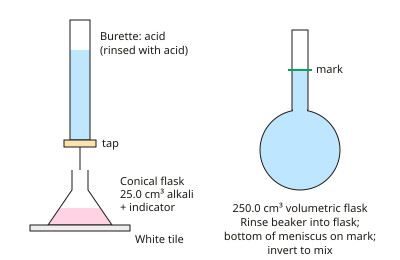

A-level Chemistry Year 12 · Topic 8
Required and core practicals
Required and core practicals are the experiments every A-level chemist must be able to describe, carry out and analyse.
We will make a standard solution and carry out a titration, measure the molar volume of a gas, and find enthalpy changes by calorimetry.
Then we investigate rates of reaction, prepare an organic liquid by reflux and distillation, and purify it with a separating funnel, drying agent and redistillation.
- 6 subtopics
- 366 questions
- Free: 8.1 notes and 10 questions
In this topic
- 8.1Practical: preparing a standard solution and carrying out an acid-base titrationFree below · 67 questions
- 8.2Practical: measuring the molar volume of a gas and determining moles from reacting massesOpen in Full Marks · 66 questions
- 8.3Practical: measuring enthalpy changes by calorimetry (neutralisation, displacement, solution and combustion)Open in Full Marks · 65 questions
- 8.4Practical: investigating rates of reaction by gas collection, clock reactions and continuous monitoringOpen in Full Marks · 72 questions
- 8.5Practical: preparing an organic liquid by heating under reflux and distillation (e.g. oxidation of an alcohol)Open in Full Marks · 62 questions
- 8.6Practical: purifying an organic liquid using a separating funnel, drying agent and redistillationOpen in Full Marks · 34 questions
8.1 · Free notes
Practical: preparing a standard solution and carrying out an acid-base titration

Key points
- A standard solution is a solution of accurately known concentration, measured in mol dm⁻³. It is made from a primary standard: a pure, stable, soluble solid with a known formula and a fairly high molar mass that is not hygroscopic.
- To make one, first weigh by difference: weigh the container with the solid, tip the solid out, then reweigh the container. Record the mass to the same number of decimal places each time.
- Dissolve the solid in a beaker with less than the final volume of distilled water, stirring with a glass rod. Transfer the solution to a volumetric flask through a funnel, rinsing the beaker, rod and funnel into the flask so that no solute is lost.
- Add distilled water until the bottom of the meniscus sits on the graduation mark, adding the last few cm³ drop by drop. Stopper the flask and invert several times to mix. Never warm the flask to speed up dissolving, because the volume changes with temperature.
- Amount of substance: n = c × V with V in dm³ (V in cm³ ÷ 1000). Mass needed = n × Mr. Example: 250.0 cm³ of 0.0400 mol dm⁻³ Na₂CO₃ needs 0.0100 mol × 106.0 g mol⁻¹ = 1.06 g.
- Titration apparatus: the burette and pipette are rinsed with the solution they will contain. The conical flask is rinsed with distilled water only, because water does not change the moles of solute in it. Remove the funnel from the burette before reading, and fill the jet below the tap so there is no air bubble.
- Use a pipette (e.g. 25.0 cm³) to measure the solution in the flask. Add a few drops of indicator. Run in the titrant from the burette while swirling, over a white tile, adding it drop by drop near the end-point. Read the burette at eye level at the bottom of the meniscus.
- Indicator choice: methyl orange (red in acid, yellow in alkali, orange at the end-point) suits strong acid–weak base and strong–strong titrations. Phenolphthalein (colourless in acid, pink in alkali) suits weak acid–strong base and strong–strong titrations. Use a single indicator, and never one that changes colour gradually over a wide pH range.
- Do a rough titration first, then repeat until you have two concordant titres, meaning within 0.10 cm³ of each other. The mean titre uses concordant results only. Never include the rough titre or an outlier.
- Titration calculation: (1) n(known) = c × V; (2) use the mole ratio from the balanced equation; (3) c(unknown) = n ÷ V. For H₂SO₄ + 2NaOH → Na₂SO₄ + 2H₂O the ratio is 1 : 2. Quote answers to 3 significant figures, with units.
- Uncertainty: the burette has ±0.05 cm³ per reading, so a titre (two readings) has ±0.10 cm³. Percentage uncertainty = (uncertainty ÷ measured value) × 100, so 0.10 ÷ 24.00 × 100 = 0.42%. Using a larger sample volume or a more concentrated titrant reduces the percentage uncertainty.
- Common errors: overshooting the end-point (titre too large); an air bubble in the jet that disappears (titre too large); leaving the funnel in the burette; rinsing the flask with the solution (extra moles); and reading the top of the meniscus.
In more detail
- Worked standard solution: 250 cm³ of 0.100 mol dm⁻³ Na₂CO₃ needs 0.0250 mol × 106 = 2.65 g of Na₂CO₃.
- Worked titration with Na₂CO₃: Na₂CO₃ + 2HCl → 2NaCl + H₂O + CO₂. 25.0 cm³ of 0.100 Na₂CO₃ (2.50 × 10⁻³ mol) needs 5.00 × 10⁻³ mol HCl; titre 24.00 cm³ → [HCl] = 0.208 mol dm⁻³.
- Effect of errors: water left in the burette dilutes the titrant (titre too large); an unrinsed pipette dilutes the sample (titre too small).
- Swirling and white tile: swirling mixes the reactants; the white tile makes the colour change at the end point easier to see.
Practice
Practical: preparing a standard solution and carrying out an acid-base titration: 10 questions
Pick an answer to check it, or open the answer for the explanation.
1. 25.0 cm³ of aqueous NaOH needs a mean titre of 22.50 cm³ of 0.100 mol dm⁻³ HCl for neutralisation. What is the concentration of the NaOH?
- 0.0225 mol dm⁻³
- 0.111 mol dm⁻³
- 0.900 mol dm⁻³
- 0.0900 mol dm⁻³
Show answer
D: 0.0900 mol dm⁻³. n(HCl) = 0.100 × 0.02250 = 2.25 × 10⁻³ mol. The ratio is 1:1, so n(NaOH) is the same. c = 2.25 × 10⁻³ ÷ 0.0250 dm³ = 0.0900 mol dm⁻³.
2. 20.0 cm³ of 0.150 mol dm⁻³ H₂SO₄ is neutralised by 0.200 mol dm⁻³ NaOH. What volume of NaOH is needed?
- 15.0 cm³
- 30.0 cm³
- 60.0 cm³
- 10.0 cm³
Show answer
B: 30.0 cm³. n(H₂SO₄) = 0.150 × 0.0200 = 3.00 × 10⁻³ mol. The ratio is 1:2, so n(NaOH) = 6.00 × 10⁻³ mol. V = 6.00 × 10⁻³ ÷ 0.200 = 0.0300 dm³ = 30.0 cm³.
3. What mass of anhydrous Na₂CO₃ (Mr = 106.0) is needed to make 250.0 cm³ of a 0.0400 mol dm⁻³ standard solution?
- 1.06 g
- 10.6 g
- 4.24 g
- 0.530 g
Show answer
A: 1.06 g. n = 0.0400 × 0.2500 = 0.0100 mol. Mass = n × Mr = 0.0100 × 106.0 = 1.06 g.
4. Which indicator is most suitable for titrating ethanoic acid with sodium hydroxide solution?
- Litmus
- Universal indicator
- Phenolphthalein
- Methyl orange
Show answer
C: Phenolphthalein. Weak acid–strong base: the equivalence point is above pH 7. Phenolphthalein (pH range about 8.3–10) changes sharply there. Universal indicator and litmus do not give sharp end-points.
5. Burette readings have an uncertainty of ±0.05 cm³ each. What is the percentage uncertainty in a titre of 24.00 cm³ (two readings)?
- 0.10%
- 0.21%
- 2.1%
- 0.42%
Show answer
D: 0.42%. A titre uses two readings, so the uncertainty is ±0.10 cm³. Percentage uncertainty = 0.10 ÷ 24.00 × 100 = 0.42%.
6. Titres are: rough 24.60, then 23.60, 23.30 and 23.40 cm³. Using concordant results only (within 0.10 cm³), what is the mean titre?
- 23.43 cm³
- 23.73 cm³
- 23.35 cm³
- 23.30 cm³
Show answer
C: 23.35 cm³. Only 23.30 and 23.40 are within 0.10 cm³ of each other. The rough titre and 23.60 are excluded. Mean = (23.30 + 23.40) ÷ 2 = 23.35 cm³.
7. Why must a burette be rinsed with the solution it will contain before filling?
- To remove air bubbles from the tap
- To calibrate the volume markings
- To warm the solution to room temperature
- Water left in it would dilute the titrant
Show answer
D: Water left in it would dilute the titrant. Residual distilled water would dilute the titrant, lowering its concentration. A larger titre would then be needed and the calculated result would be wrong.
8. An air bubble in the burette jet is expelled during a titration. What is the effect on the recorded titre?
- No effect on the titre
- Titre too small
- Titre too large
- The effect cannot be predicted
Show answer
C: Titre too large. The fall in burette reading includes the volume that filled the space left by the bubble. This volume was not delivered as titrant, so the recorded titre is too large.
9. Why is sodium hydroxide not suitable as a primary standard?
- It is a weak base
- It absorbs water and CO₂ from air, so its mass is unreliable
- Its molar mass is too high
- It is insoluble in water
Show answer
B: It absorbs water and CO₂ from air, so its mass is unreliable. NaOH is hygroscopic and reacts with CO₂ in the air, so its purity and weighed mass are uncertain. A primary standard must be pure, stable and non-hygroscopic.
10. Vinegar was diluted tenfold. 25.0 cm³ of the diluted vinegar needed 18.40 cm³ of 0.100 mol dm⁻³ NaOH. What was the original concentration of ethanoic acid?
- 1.84 mol dm⁻³
- 7.36 mol dm⁻³
- 0.736 mol dm⁻³
- 0.0736 mol dm⁻³
Show answer
C: 0.736 mol dm⁻³. n(NaOH) = 0.100 × 0.01840 = 1.84 × 10⁻³ mol = n(acid), so the diluted acid is 0.0736 mol dm⁻³. The original is ten times larger: 0.736 mol dm⁻³.
Keep going in Full Marks
Full Marks has 67 questions on Practical: preparing a standard solution and carrying out an acid-base titration (57 more than here), set out in practice levels. You also get notes and 3D models for all 6 subtopics of Required and core practicals, plus games, timed exams and past papers.
On your exam board
- AQATopic 3.1.2: Amount of substance, Topic 3.1.4: Energetics, Topic 3.1.5: Kinetics, Topic 3.3.5: Alcohols
- OCR ATopic 2.1.3: Amount of substance, Topic 3.2.1: Enthalpy changes, Topic 3.2.2: Reaction rates, Topic 4.2.1: Alcohols, Topic 4.2.3: Organic synthesis
- OCR BTopic EL: Elements of life, Topic DF: Developing fuels, Topic ES: Elements from the sea, Topic WM: What's in a medicine?
- EdexcelTopic 5: Formulae, equations and amounts of substance, Topic 6: Organic chemistry I, Topic 8: Energetics I, Topic 9: Kinetics I
- CambridgeTopic 2: Atoms, molecules and stoichiometry, Topic 5: Chemical energetics, Topic 8: Reaction kinetics, Topic P: Practical skills (Paper 3)